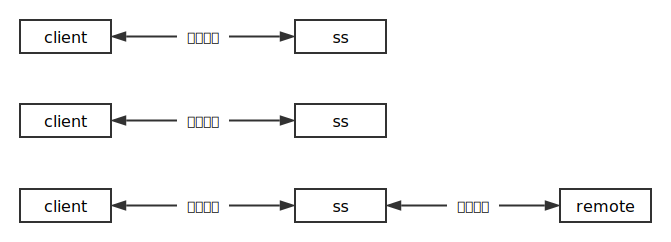
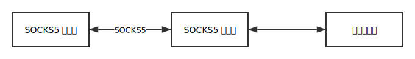
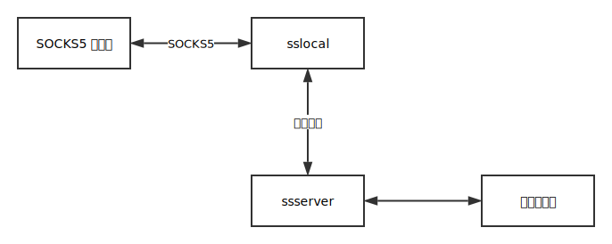
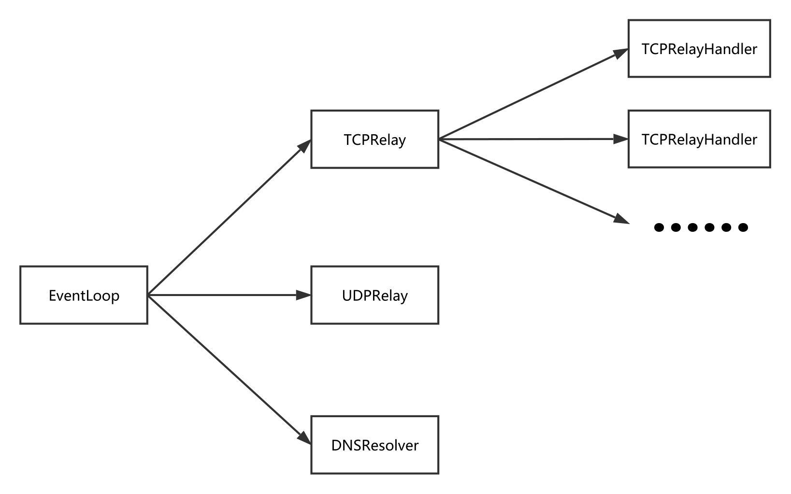

Shadowsocks 是一款著名的 SOCKS5 代理工具，深受人民群众喜爱。它的源码工程质量很高，十分便于研究。不过当你真正开始读源码的时候，会有一种似懂非懂的感觉，因为虽然它的大体框架容易理解，但是其中的诸多细节却不是那么简单明了。
本文将基于 2.9.0 版本的源码对 shadowsocks 进行分析，希望读者看完以后能对 shadowsocks 的原理有个大体上的认识。为了行文简洁，在示例中我们用 ss 指代 shadowsocks。
SOCKS5 协议
无论是实现什么网络应用，首当其冲的就是确定通讯协议。SOCKS5 协议作为一个同时支持 TCP 和 UDP 的应用层协议（RFC 只有短短的 7 页），因为其简单易用的特性而被 shadowsocks 青睐。我们先从 SOCKS5 协议入手，一点一点剖析 shadowsocks。
握手阶段
客户端和服务器在握手阶段协商认证方式，比如：是否采用用户名/密码的方式进行认证，或者不采用任何认证方式。
客户端发送给服务器的消息格式如下（数字表示对应字段占用的字节数）：
1 2 3 4 5 | +----+----------+----------+
|VER | NMETHODS | METHODS |
+----+----------+----------+
| 1 | 1 | 1~255 |
+----+----------+----------+
|
VER字段是当前协议的版本号，也就是5；NMETHODS字段是METHODS字段占用的字节数；METHODS字段的每一个字节表示一种认证方式，表示客户端支持的全部认证方式。
服务器在收到客户端的协商请求后，会检查是否有服务器支持的认证方式，并返回客户端如下格式的消息：
1 2 3 4 5 | +----+--------+
|VER | METHOD |
+----+--------+
| 1 | 1 |
+----+--------+
|
对于 shadowsocks 而言，返回给客户端的值只有两种可能：
0x05 0x00：告诉客户端采用无认证的方式建立连接；0x05 0xff：客户端的任意一种认证方式服务器都不支持。
举个例子，就 shadowsocks 而言，最简单的握手可能是这样的：
1 2 | client -> ss: 0x05 0x01 0x00
ss -> client: 0x05 0x00
|
如果客户端 还支持 用户名/密码的认证方式，那么握手会是这样子：
1 2 | client -> ss: 0x05 0x02 0x00 0x02
ss -> client: 0x05 0x00
|
如果客户端 只支持 用户名/密码的认证方式，那么握手会是这样子：
1 2 | client -> ss: 0x05 0x01 0x02
ss -> client: 0x05 0xff
|
建立连接
完成握手后，客户端会向服务器发起请求，请求的格式如下：
1 2 3 4 5 | +----+-----+-------+------+----------+----------+
|VER | CMD | RSV | ATYP | DST.ADDR | DST.PORT |
+----+-----+-------+------+----------+----------+
| 1 | 1 | 1 | 1 | Variable | 2 |
+----+-----+-------+------+----------+----------+
|
CMD字段：command的缩写，shadowsocks 只用到了：0x01：建立 TCP 连接0x03：关联 UDP 请求
RSV字段：保留字段，值为0x00；ATYP字段：address type的缩写，取值为：0x01：IPv40x03：域名0x04：IPv6
DST.ADDR字段：destination address的缩写，取值随ATYP变化：ATYP == 0x01：4 个字节的 IPv4 地址ATYP == 0x03：1 个字节表示域名长度，紧随其后的是对应的域名ATYP == 0x04：16 个字节的 IPv6 地址
DST.PORT字段：目的服务器的端口
在收到客户端的请求后，服务器会返回如下格式的消息：
1 2 3 4 5 | +----+-----+-------+------+----------+----------+
|VER | REP | RSV | ATYP | BND.ADDR | BND.PORT |
+----+-----+-------+------+----------+----------+
| 1 | 1 | 1 | 1 | Variable | 2 |
+----+-----+-------+------+----------+----------+
|
REP字段：用以告知客户端请求处理情况。在请求处理成功的情况下，shadowsocks 将这个字段的值设为0x00，否则，shadowsocks 会直接断开连接；- 其它字段和请求中字段的取值类型一样。
举例来说，如果客户端通过 shadowsocks 代理 127.0.0.1:8000 的请求，那么客户端和 shadowsocks 之间的请求和响应是这样的：
1 2 3 4 | # request: VER CMD RSV ATYP DST.ADDR DST.PORT
client -> ss: 0x05 0x01 0x00 0x01 0x7f 0x00 0x00 0x01 0x1f 0x40
# response: VER REP RSV ATYP BND.ADDR BND.PORT
ss -> client: 0x05 0x00 0x00 0x01 0x00 0x00 0x00 0x00 0x10 0x10
|
这里 0x7f 0x00 0x00 0x01 0x1f 0x40 对应的是 127.0.0.1:8000。需要注意的是，当请求中的 CMD == 0x01 时，绝大部分 SOCKS5 客户端的实现都会忽略 SOCKS5 服务器返回的 BND.ADDR 和 BND.PORT 字段，所以这里的 0x00 0x00 0x00 0x00 0x10 0x10 只是 shadowsocks 返回的一个无意义的地址和端口1。
传输阶段
SOCKS5 协议只负责建立连接，在完成握手阶段和建立连接之后，SOCKS5 服务器就只做简单的转发了。假如客户端通过 shadowsocks 代理 google.com:80（用 remote 表示），那么整个过程如图所示：

整个过程中发生的传输可能是这样的：
1 2 3 4 5 6 7 8 9 10 | # 握手阶段
client -> ss: 0x05 0x01 0x00
ss -> client: 0x05 0x00
# 建立连接
client -> ss: 0x05 0x01 0x00 0x03 0x0a b'google.com' 0x00 0x50
ss -> client: 0x05 0x00 0x00 0x01 0x00 0x00 0x00 0x00 0x10 0x10
# 传输阶段
client -> ss -> remote
remote -> ss -> client
...
|
b'google.com' 表示 google.com 对应的 ASCII 码。
整体结构
在进一步了解 shadowsocks 的内部构造之前，我们粗略的看一下各个模块分别做了些什么：
tcprelay.py：核心部分，整个 SOCKS5 协议的实现都在这里。负责 TCP 代理的实现；udprelay.py：负责 UDP 代理的实现；asyncdns.py：实现了简单的异步 DNS 查询；eventloop.py：封装了三种常见的 IO 复用函数——epoll、kqueue和select，提供统一的接口；encrypt.py：提供统一的加密解密接口；crypto：封装了多种加密库的调用，包括 OpenSSL 和 libsodium；daemon.py：用于实现守护进程；shell.py：读取命令行参数，检查配置；common.py：提供一些工具函数，比如：将bytes转换成str、解析 SOCKS5 请求；lru_cache.py：实现了 LRU 缓存；local.py：shadowsocks 客户端（即sslocal命令）的入口；server.py：shadowsocks 服务器（即ssserver命令）的入口。
sslocal 和 ssserver 复用了绝大部分的代码，所以两者的运行流程都可以用伪代码表示为：
1 2 3 4 5 6 7 8 9 10 11 12 13 14 15 16 17 18 19 20 21 22 23 24 25 26 | # local.py or server.py
def main():
# 解析命令行和配置文件中的参数
conf = shell.parse_config()
# 根据配置决定要不要以守护进程的方式运行
daemon.daemonize(conf)
loop = eventloop.init()
tcp_server = tcprelay.init(conf)
udp_server = udprelay.init(conf)
dns_resolver = asyncdns.init(conf)
# 将 TCPRelay、UDPRelay 和 DNSResolver 注册到事件循环中
tcp_server.add_to_loop(loop)
udp_server.add_to_loop(loop)
dns_resolver.add_to_loop(loop)
loop.run()
# eventloop.py 中 loop.run 的实现
def loop_run():
while True:
events = wait_for_events()
for handler, event in events:
# handler 是 TCPRelay、UDPRelay 或 DNSResolver
handler.handle_event(event)
|
有一点需要提一下：代理和能翻墙的代理是不一样的。比如，下图是普通的 SOCKS5 代理：

而能翻墙的 SOCKS5 代理是下图这种结构：

可以看出来，SOCKS5 服务器的实现被拆分成了两部分：
- sslocal 负责与 SOCKS5 客户端进行 SOCKS5 协议相关的通讯（握手并建立连接），在建立连接后将 SOCKS5 客户端发来的数据加密并发送给 ssserver；
- ssserver 起到一个中继的作用，负责解密以后将数据转发给目标服务器，并不涉及 SOCKS5 协议的任何一部分。
其中一个重要的环节就是加密解密——数据经过 sslocal（本机）加密以后转发给 ssserver（VPS），这也是普通代理和能翻墙的代理的区别。在了解到这一点以后，shadowsocks 的很多细节就容易理解了。下面我们分模块，对 shadowsocks 内部机理一探究竟。
eventloop.py
eventloop.py 封装了三种常见的 IO 复用函数——epoll、kqueue 和 select，提供统一的接口，如果你没用过或者不知道它们是什么，那么你可能得先了解一下。其中主要的逻辑在于 run 的实现：
1 2 3 4 5 6 7 8 9 10 11 12 13 14 15 16 17 18 19 20 21 22 23 24 25 26 27 28 29 30 31 32 33 34 35 36 37 38 | def run(self):
events = []
while not self._stopping:
# as soon as possible
asap = False
# 获取事件
try:
events = self.poll(TIMEOUT_PRECISION)
except (OSError, IOError) as e:
if errno_from_exception(e) in (errno.EPIPE, errno.EINTR):
# EPIPE: Happens when the client closes the connection
# EINTR: Happens when received a signal
# handles them as soon as possible
asap = True
logging.debug('poll:%s', e)
else:
logging.error('poll:%s', e)
import traceback
traceback.print_exc()
continue
# 找到事件对应的 handler，将事件交由它处理
for sock, fd, event in events:
# 通过 fd 找到对应的 handler
# 一个 handler 可能对应多个 fd（reactor 模式）
handler = self._fdmap.get(fd, None)
if handler is not None:
handler = handler[1]
try:
# handler 可能是 TCPRelay、UDPRelay 或 DNSResolver
handler.handle_event(sock, fd, event)
except (OSError, IOError) as e:
shell.print_exception(e)
# 计时器。每隔 10s 调用注册的 handle_periodic 函数
now = time.time()
if asap or now - self._last_time >= TIMEOUT_PRECISION:
for callback in self._periodic_callbacks:
callback()
self._last_time = now
|
run 是一个典型的事件循环，它会等待注册事件的发生，然后通过事件对应的 fd 找到 handler，调用 handler.handle_event(sock, fd, event) 来将事件交由 handler 处理，同时每隔 10 秒调用 TCPRelay、UDPRelay 或 DNSResolver 的 handle_periodic 函数处理超时或清除缓存。
tcprelay.py
Shadowsocks 采用了反应器模式（reactor pattern）。以下图为例：

TCPRelayHandler 的事件会由 EventLoop 分发给 TCPRelay，再经由 TCPRelay 将事件分发给相应的 TCPRelayHandler 处理。这个过程发生在 EventLoop 和 TCPRelay 的 handle_event 函数。
TCPRelay
我们去掉其中的日志处理和错误处理逻辑，看看 handle_event 函数：
1 2 3 4 5 6 7 8 9 10 11 12 | def handle_event(self, sock, fd, event):
# 如果是 TCPRelay 的 socket
if sock == self._server_socket:
conn = self._server_socket.accept()
TCPRelayHandler(self, self._fd_to_handlers,
self._eventloop, conn[0], self._config,
self._dns_resolver, self._is_local)
else:
# 找到 fd 对应的 TCPRelayHandler
handler = self._fd_to_handlers.get(fd, None)
if handler:
handler.handle_event(sock, event)
|
逻辑很简单，如果发生事件（可读事件）的 socket 是 TCPRelay 的 socket，说明有新的 TCP 连接，创建一个 TCPRelayHandler 对象将新连接封装起来。否则，找到发生事件的 TCPRelayHandler，将事件交给它处理。
TCPRelayHandler
-
也有部分 SOCKS5 服务器的实现返回全零 ↩